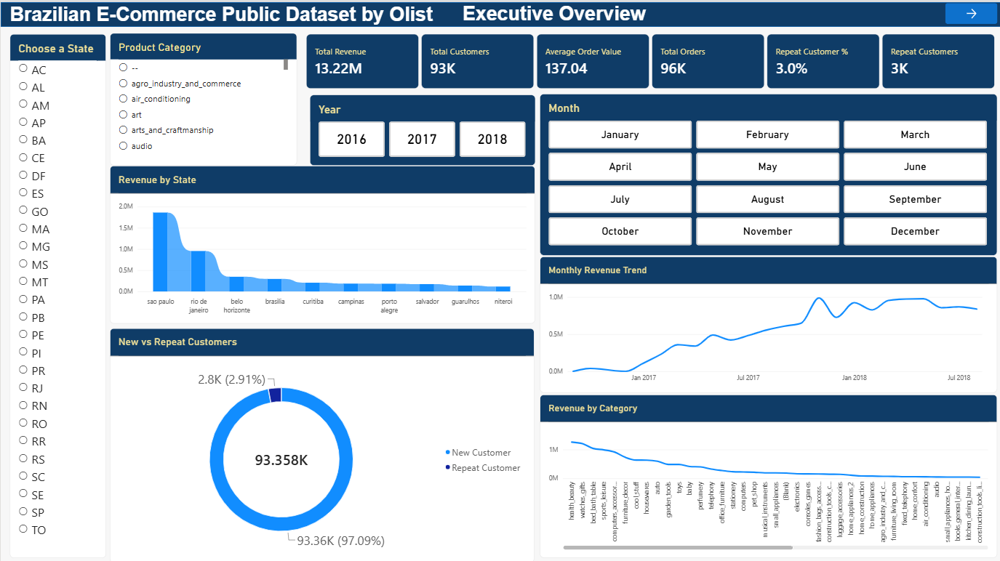

RETENTION / 2016—18Customer revenue, retention & churn
From 99K+ orders to an actionable retention strategy. Built a PostgreSQL analytical layer, RFM segmentation, cohort analysis, and a Power BI story for the Brazilian Olist marketplace.
R$13.22Mrevenue analyzed
R$7.74Mrevenue at risk
96,096customers profiled